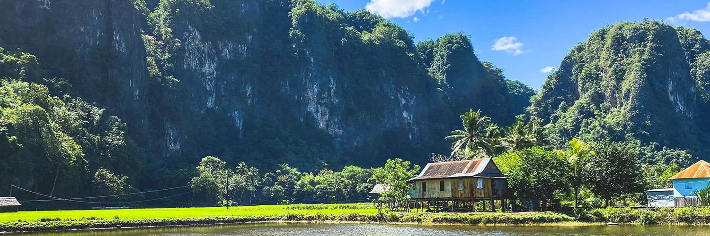

Selamat Datang di Kampoeng Karst Rammang-Rammang!

Kampoeng Karst Rammang-Rammang menghadirkan keindahan pegunungan karst, sungai, dan suasana alam yang asri. Tempat yang tepat untuk menikmati keindahan alam dan menciptakan momen berkesan.
TENTANG PULAU RAMMANG-RAMMANG
SEJARAHRammang-Rammang merupakan kawasan wisata alam yang terkenal dengan keindahan pegunungan karst, sungai, dan suasana pedesaan yang masih asri. Kawasan ini menjadi salah satu destinasi wisata alam yang menarik di Sulawesi Selatan. Nama Rammang-Rammang berasal dari bahasa Makassar yang berarti awan atau kabut. Nama tersebut berkaitan dengan kondisi kawasan yang sering diselimuti kabut, terutama pada pagi hari, sehingga memberikan suasana yang khas dan indah. Rammang-Rammang merupakan bagian dari kawasan karst Maros-Pangkep yang terbentuk melalui proses geologi selama jutaan tahun. Kawasan ini juga memiliki gua-gua prasejarah yang menyimpan berbagai peninggalan kehidupan manusia pada masa lampau. Seiring waktu, keindahan alam dan nilai sejarah yang dimilikinya membuat Rammang-Rammang semakin dikenal sebagai destinasi wisata. Hingga saat ini, kawasan ini menjadi tempat yang menarik untuk menikmati alam, menjelajah kawasan karst, dan mengenal kekayaan budaya serta sejarah Sulawesi Selatan. |
AKTIVITAS WISATA
|
Rammang-Rammang menawarkan berbagai aktivitas menarik yang dapat dilakukan untuk menikmati keindahan alam dan suasana kawasan karst.
|

|
PRICELIST AKTIVITAS WISATA
|
|
Nikmati berbagai aktivitas wisata di Rammang-Rammang dengan pilihan harga yang sesuai dengan pengalaman yang ingin kamu nikmati.
|
GALERI
Berikut adalah beberapa gambaran keindahan alam dan suasana wisata yang dapat ditemukan di Kampoeng Karst Rammang-Rammang.

Pegunungan Karst |

Sungai Rammang-Rammang |

Pemandangan Alam |
|
Aktivitas Wisata |

Suasana Wisata |

Gua Prasejarah |
LOKASI
Temukan lokasi Kampoeng Karst Rammang-Rammang dan rencanakan perjalananmu.
Peta Lokasi |
FORMULIR PENGUNJUNG
Silakan isi formulir berikut untuk memberikan informasi dan pengalaman mengenai kunjungan ke Rammang-Rammang.